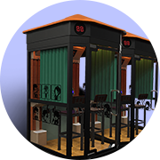

<!DOCTYPE HTML>
<html>
<head>
    <meta charset="utf-8">
    <meta name="viewport" content="maximum-scale=1.0,minimum-scale=1.0,user-scalable=0,width=device-width,initial-scale=1.0"/>
    <meta name="format-detection" content="telephone=no,email=no,date=no,address=no">
    <title>附近迷你KTV</title>
    <link rel="stylesheet" type="text/css" href="../css/aui.css"/>
    <link rel="stylesheet" type="text/css" href="../css/mescroll.min.css"/>
    <link rel="stylesheet" type="text/css" href="//at.alicdn.com/t/font_546112_m0tjqxytxg3qh0k9.css"/>
    <link rel="stylesheet" type="text/css" href="../css/common.css"/>
    <link rel="stylesheet" type="text/css" href="../nearby/nearby.css"/>
</head>
<body class="white-body">
<ul class="tab-list aui-content-padded aui-list aui-media-list nearby-list" id="tab-content">
    <!--<li class="aui-list-item aui-list-item-middle nearby-list-item">-->
        <!--<a class="aui-media-list-item-inner" href="nearbyMap.html">-->
            <!--<div class="aui-list-item-media nearby-list-img">-->
                <!---->
            <!--</div>-->
            <!--<div class="aui-list-item-inner">-->
                <!--<div class="aui-list-item-text">-->
                    <!--<div class="aui-list-item-title nearby-list-name aui-ellipsis-1">天虹店</div>-->
                    <!--<div class="aui-list-item-right add-distance"><i class="iconfont icon-dingwei2"></i><span>800m</span></div>-->
                <!--</div>-->
                <!--<div class="aui-list-item-text nearby-list-add">-->
                    <!--广东省深圳市宝安区西乡街道天虹商城3楼-->
                <!--</div>-->
            <!--</div>-->
        <!--</a>-->
    <!--</li>-->
    <!--<li class="aui-list-item aui-list-item-middle nearby-list-item">-->
        <!--<a class="aui-media-list-item-inner" href="nearbyMap.html">-->
            <!--<div class="aui-list-item-media nearby-list-img">-->
                <!---->
            <!--</div>-->
            <!--<div class="aui-list-item-inner">-->
                <!--<div class="aui-list-item-text">-->
                    <!--<div class="aui-list-item-title nearby-list-name">天虹店</div>-->
                    <!--<div class="aui-list-item-right add-distance"><i class="iconfont icon-dingwei2"></i><span>800m</span></div>-->
                <!--</div>-->
                <!--<div class="aui-list-item-text nearby-list-add">-->
                    <!--广东省深圳市宝安区西乡街道天虹商城3楼-->
                <!--</div>-->
            <!--</div>-->
        <!--</a>-->
    <!--</li>-->
</ul>

<script type="text/javascript" src="../js/jquery-3.2.1.min.js" ></script>
<script type="text/javascript" src="../js/api.js" ></script>
<script type="text/javascript" src="../js/mescroll.min.js" ></script>
<script src="http://res.wx.qq.com/open/js/jweixin-1.0.0.js"></script>
<script type="text/javascript" src="../nearby/nearby.js" ></script>
<script type="text/javascript">
//    //配置信息验证接口
//    wx.config({
//        debug: false,
//        appId: '<?php echo $signPackage["appId"];?>',
//        timestamp: '<?php echo $signPackage["timestamp"];?>',
//        nonceStr: '<?php echo $signPackage["nonceStr"];?>',
//        signature: '<?php echo $signPackage["signature"];?>',
//        jsApiList: [
//            // 所有要调用的 API 都要加到这个列表中
//            'checkJsApi',
//            'openLocation',
//            'getLocation'
//        ]
//    });
//    //验证之后进入该函数，所有需要加载页面时调用的接口都必须写在该里面
//    wx.ready(function () {
////基础接口判断当前客户端版本是否支持指定JS接口
//        wx.checkJsApi({
//            jsApiList: [
//                'getLocation'
//            ],
//            success: function (res) {
//                // alert(JSON.stringify(res));
//                // alert(JSON.stringify(res.checkResult.getLocation));
//                if (res.checkResult.getLocation == false) {
//                    alert('你的微信版本太低，不支持微信JS接口，请升级到最新的微信版本！');
//                    return;
//                }
//            }
//        });
//        //微信获取地理位置并拉取用户列表（用户允许获取用户的经纬度）
//        wx.getLocation({
//            success: function (res) {
//                var latitude = res.latitude; // 纬度，浮点数，范围为90 ~ -90
//                var longitude = res.longitude; // 经度，浮点数，范围为180 ~ -180。
//                //去数据库查询获取附近的门店
//                $.ajax({
//                    type: 'post',
//                    url: '__CONTROLLER__/shopList',
//                    dataType: 'json',
//                    data: {"latitude": latitude,"longitude":longitude},
//                    success:function(shopInfo){
//                        //index是下表，el是值
//                        $(shopInfo).each(function(index,el){
//                            $("#tab-content").append('<div class="item-store"> <a class="s-top ui-width-100 ui-flex" href="__CONTROLLER__/shopDetail/shop_id/'+el.shop_id+'">  <div class="s-message"> <h4>'+el.shop_name+'</h4> <div class="s-address">'+el.shop_position+'</div> </div> </a> <div class="s-bottom-block ui-width-100"> <ul>  <li> <a href="__CONTROLLER__/daohang/shop_id/'+el.shop_id+'" class="db-block"> <i class="icon iconfont">&#xe66c;</i> 一键导航 <span class="kilemiter"> '+el.distance/1000+'km </span> </a> </li> </ul> </div> </div>');
//                        })
//                    }
//                });
//            },
//            cancel: function (res) {
//                $(".city").triggerHandler("focus");
//            }
//        });
//    });
</script>
</body>
</html>